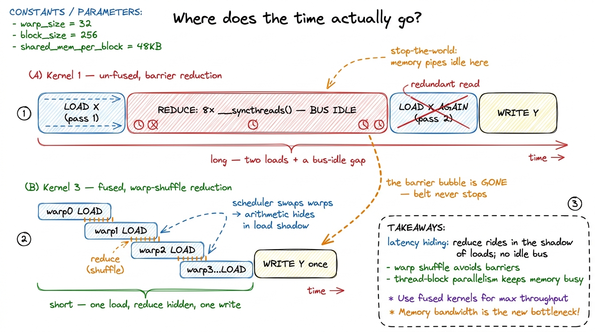
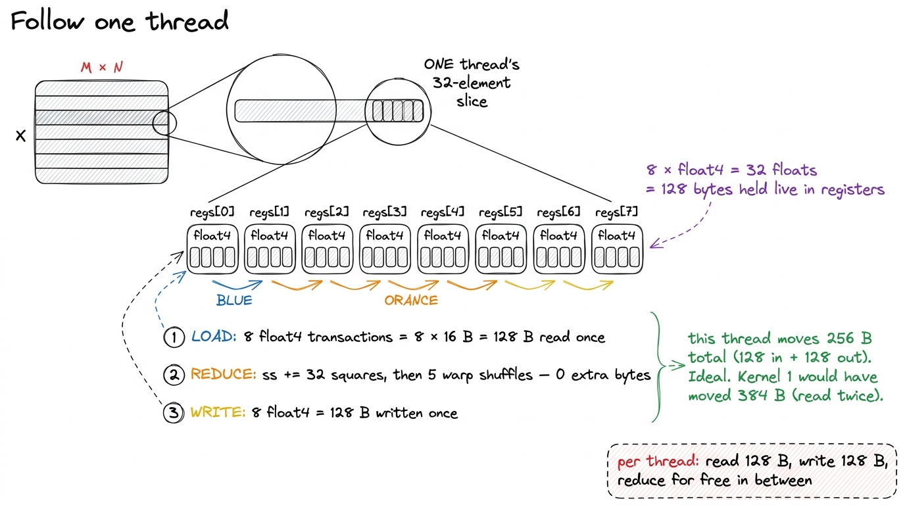
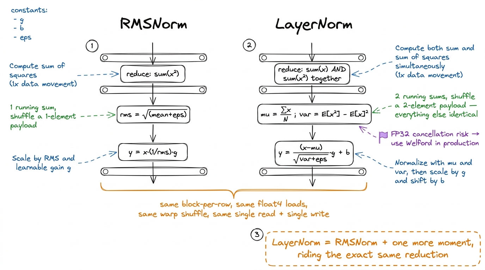

RMSNorm & LayerNorm kernels
Let me start with a claim that sounds wrong the first time you hear it: the slowest layer in your transformer is often the one doing almost none of the math.
Every transformer block has two big matrix multiplies everyone worships — the attention projections and the MLP — and, tucked quietly between them, a normalization step nobody thinks about. LayerNorm and its leaner cousin RMSNorm are three lines of arithmetic each: subtract a mean, divide by a standard deviation, scale by a learned weight. They touch a rounding-error fraction of the model's floating-point operations. And yet, on real hardware, they can eat a shockingly large slice of the clock.
Horace He measured this directly on BERT. Normalization and the pointwise operations around it are about 0.2% of the FLOPs, and yet they run at 250× fewer FLOP/s (normalization) and 700× fewer FLOP/s (pointwise) than the matmuls in the same model.1 From "Making Deep Learning Go Brrrr From First Principles" — the same essay that anchors the three regimes. His phrasing is worth keeping: these layers do far less arithmetic yet stubbornly refuse to be free. Read that twice. The op with 500× less work to do runs hundreds of times slower per unit of work. That gap between "how much math there is" and "how long it takes" is the entire subject of this article.
So here is the question we are going to answer, from the ground up: why is a norm slow, and what exactly do you do to make it fast? By the end you will have written RMSNorm and LayerNorm from scratch, fused the whole thing into a single streaming pass over memory, reduced across threads using register shuffles instead of shared memory, and — if you do it right — hit something like 85% of the GPU's raw memory bandwidth. Along the way I want to convince you of something Stanford's CRFM team demonstrated with a headline number: a well-written LayerNorm can hit 484% of PyTorch's FP32 reference — a 4.8× win on an operation that is "0.2% of the FLOPs."2 CRFM, "Surprisingly Fast AI-Generated Kernels" (2025). Exact figure: 484.4% of torch.nn.LayerNorm in FP32, on an input of shape (16, 64, 256, 256), measured on an NVIDIA L40S. The reference simply left bandwidth on the table.
If you have never written a CUDA kernel, don't worry — we build every piece before we use it. Let's start by figuring out why this operation behaves the way it does, because that single fact dictates every optimization that follows.
First, what is a norm actually computing?
Before hardware, let's nail the math with a tiny example you can do in your head. A norm operates on one row at a time — one token's feature vector — and every row is independent of every other. So we only ever have to reason about a single row.
Take a row of four numbers: x = [3, 1, 2, 2]. RMSNorm — "root mean square" norm — does exactly what its name says. Square each element: [9, 1, 4, 4]. Take the mean: (9+1+4+4)/4 = 18/4 = 4.5. Take the square root: sqrt(4.5) ≈ 2.121. That number is the RMS of the row. Then divide every element by it and scale by a learned weight g:
rms = sqrt( mean(x_i^2) + eps )
y_i = (x_i / rms) * g_iThe eps (a tiny constant like 1e-6) is just there so we never divide by zero. For our row, y = [3/2.121, 1/2.121, 2/2.121, 2/2.121] ≈ [1.414, 0.471, 0.943, 0.943] before the weight. That's it. That's the whole operation.
Now count the work. Per element we do: one multiply (the square), one add (into the running sum), one divide (or a reciprocal), one multiply (by g). Call it roughly 5 FLOPs per element. For a row of N elements that's 5N FLOPs to produce N outputs.
Here is the pivotal observation. To do those 5N FLOPs, how many bytes must cross between the GPU's main memory and its compute cores? You have to read all N inputs (that's 4N bytes in FP32) and write all N outputs (4N bytes), plus read the weight vector once. So roughly 8N bytes move to support 5N FLOPs.
That ratio — FLOPs done per byte moved — has a name, and it decides everything.
The one number that decides everything: arithmetic intensity
Arithmetic intensity is FLOPs divided by bytes moved. For our norm it's about 5N / 8N ≈ 0.6 FLOPs per byte. Hold that number.
Why does it matter? Because a GPU has two separate speed limits, and which one you hit depends entirely on this ratio. An H100 can do about 989 TFLOP/s of BF16 math, and it can move about 3.35 TB/s across its HBM3 memory.3 3.35 TB/s is the SXM H100's HBM3 figure; the H200 and B200 push higher (~4.8 TB/s and ~8 TB/s respectively). The ratio to peak FLOPs — the ridge point — stays in the same ballpark, so the argument here is hardware-independent. Divide them: 989e12 / 3.35e12 ≈ 295. That's the ridge point — the arithmetic intensity at which the two limits balance. If your kernel does more than ~295 FLOPs per byte, you'll run out of math throughput first (compute-bound). If you do fewer, you'll run out of bandwidth first (memory-bound), and the compute units sit idle waiting for data.
Our norm does 0.6 FLOPs per byte. The ridge is at 295. We are roughly 500× below the ridge. This is not a close call. There is no clever math trick, no tensor core, no lower-precision multiply that helps on the compute side — the compute side was never the bottleneck and never will be. The tensor cores stay completely dark during a norm. The only currency that buys speed here is bytes moved.
 figure rendering · A norm sits hundreds of times below the ridge point. The entire optimi
figure rendering · A norm sits hundreds of times below the ridge point. The entire optimiThis flips our whole scorecard. If someone hands you a GEMM kernel, you grade it on "% of peak FLOP/s." Grading a norm that way is meaningless — you'd be measuring a rounding error. The right scorecard for a norm is achieved HBM bandwidth as a fraction of the 3.35 TB/s peak. A perfect norm kernel reads X once, writes Y once, both at streaming speed, and does the reduction for free in the shadow of those loads. Every optimization in this article is aimed at that one target and nothing else.
Let me plant the mental model we'll reuse the whole way down, because it's the picture everything hangs on: a norm is a conveyor belt. Data streams in from memory, gets a light touch of arithmetic, streams back out. The belt's width is the memory bus. Our job is never "compute faster" — it's "keep the belt full and never send the same box down it twice."
Kernel 1: one block per row, the naive reduction
The decomposition writes itself from the math. A norm reduces within a row and is independent across rows. So the natural mapping is: one thread block per row.4 A thread block is CUDA's unit of cooperating threads — up to 1024 of them — that share fast on-chip memory and can synchronize with a barrier. Blocks cannot cheaply talk to each other, which is exactly why "one block per row" is so clean: rows are independent, so blocks never need to. Block number r owns row r. It loads that row, reduces it to a single RMS value, normalizes, and writes it back. Rows never talk to each other — no global synchronization, no atomics across blocks. The parallelism is embarrassingly clean.
Inside the block, we split the row's N features across the block's threads. Say the block has 256 threads and the row has 1024 features; each thread handles 4 of them, striding across the row so that neighboring threads read neighboring memory (this matters, and we'll come back to why). Each thread accumulates a partial sum of squares in a register. Then the block has to combine 256 partial sums into one total. The dumbest way to do that combination is a shared-memory tree reduction: every thread drops its partial into a shared array, then the block does log2(256) = 8 rounds of "halve the survivors and add," with a barrier between each round.
__global__ void rmsnorm_naive(const float* X, const float* G, float* Y,
int N, float eps) {
int row = blockIdx.x;
const float* x = X + (size_t)row * N;
float* y = Y + (size_t)row * N;
__shared__ float smem[1024];
float partial = 0.0f;
for (int i = threadIdx.x; i < N; i += blockDim.x) {
float v = x[i];
partial += v * v; // sum of squares
}
smem[threadIdx.x] = partial;
__syncthreads();
// tree reduction in shared memory
for (int s = blockDim.x / 2; s > 0; s >>= 1) {
if (threadIdx.x < s) smem[threadIdx.x] += smem[threadIdx.x + s];
__syncthreads();
}
float rms = rsqrtf(smem[0] / N + eps); // 1 / sqrt(mean + eps)
for (int i = threadIdx.x; i < N; i += blockDim.x)
y[i] = x[i] * rms * G[i];
}Read the shape of it. A grid-stride loop (the i += blockDim.x) lets 256 threads chew through any N. A reduction sits in the middle. Then a second loop re-reads the row and writes the output. This is correct. It even runs at a respectable speed. But it leaves a lot on the floor, and to see why we have to look at what the hardware is actually doing.
 figure rendering · Kernel 1. One block per row, a shared-memory tree reduction in the mid
figure rendering · Kernel 1. One block per row, a shared-memory tree reduction in the midNow let's profile it and ask the honest question: where is the time going? Nsight Compute confirms the obvious first — we're memory-bound (of course we are, we proved that before writing a line). But it also shows we are not at peak bandwidth. Two things are holding us back, and naming them precisely is the whole job.
First problem: the reduction is a barrier. Those eight __syncthreads() rounds serialize the entire block. During each barrier, threads that finished early stand around waiting for stragglers, and — critically — the memory pipes go idle. The reduction is not overlapping with useful loads; it's a stop-the-world phase wedged between them. On our conveyor-belt picture, the belt halts eight times while everyone huddles to add up numbers.
Second problem: we read the row twice. Look again — the first loop reads x[i] to build the sum of squares, then after the reduction the second loop reads x[i] again to normalize it. So total traffic is: read X, read X again, write Y = 3·M·N bytes. But we proved an ideal norm only needs to move 2·M·N bytes (read once, write once). We are moving 50% more data than the physics requires. On a bandwidth-bound kernel, that extra traffic is close to pure extra time.
Two problems, two kernels. Let's fix the barrier first, because it's the cheaper win and it teaches a beautiful trick.
Kernel 2: reduce inside a warp, with no shared memory at all
Here's a question worth pausing on. The tree reduction spends most of its cost on __syncthreads() barriers, not on the additions themselves. So: is there a group of threads that's already synchronized, that we don't have to pay to sync?
There is. It's called a warp. A GPU doesn't schedule threads one at a time — it schedules them in fixed bundles of 32, and all 32 threads in a warp execute the same instruction at the same time, in lockstep, on the same clock.5 The 32-thread warp is the true unit of execution on NVIDIA GPUs. A thread block is a software convenience built on top of warps; the hardware only ever issues warp-wide instructions. This is why so many GPU tricks are really "warp tricks in disguise." Threads in the same warp are already in sync — for free, by construction. So for the 32 threads in one warp, we shouldn't need shared memory or a barrier to combine their partials at all.
And indeed we don't. Modern GPUs give us a warp shuffle: an instruction that lets one thread read a register directly out of another thread in the same warp, register-to-register, with no trip through memory. The specific one we want is __shfl_down_sync: each thread grabs a value from a lane a fixed distance below it and adds. Do that with strides 16, 8, 4, 2, 1 — five shuffles, because log2(32) = 5 — and all 32 partials collapse into lane 0. No shared memory. No __syncthreads(). Entirely inside the register file.
__device__ __forceinline__ float warpReduceSum(float v) {
for (int off = 16; off > 0; off >>= 1)
v += __shfl_down_sync(0xffffffff, v, off);
return v; // lane 0 now holds the warp's total
}Let's trace it by hand with a warp of just 4 lanes holding [3, 1, 2, 2] (pretend the warp is size 4 so it fits on the page). Stride 2: lane 0 gets lane 2's value (3+2=5), lane 1 gets lane 3's (1+2=3). Stride 1: lane 0 gets lane 1's (5+3=8). Lane 0 holds 8, the total. Two shuffles for 4 lanes = log2(4). The real thing does five for 32. That's the whole reduction, and not one byte touched shared memory.
 figure rendering · Kernel 2. The intra-warp reduction lives entirely in registers via `__
figure rendering · Kernel 2. The intra-warp reduction lives entirely in registers via `____shfl_down_sync. Shared memory shrinks from 256 slots to one slot per warp.A block usually has more than one warp, so we do a two-level reduction: every warp shuffles down to its own lane-0 partial; those few partials (one per warp — for a 256-thread block that's just 8 numbers) go through a tiny shared-memory strip; then a single warp shuffles that handful one last time. Notice what happened to shared memory: it went from a 256-wide tree needing 8 barrier rounds to an 8-wide hop needing basically one. The reduction has stopped being a stop-the-world phase and started hiding underneath the loads.
Profile again and the barrier stalls in the Nsight timeline largely evaporate. Good. But — and this is the honest bridge — we're still reading the row twice. That 3·M·N traffic is now the single biggest thing standing between us and the roofline. Time for the move that matters most.
Kernel 3: fuse into one pass, and stop wasting the second read
This is the heart of the article, and it's the exact same lesson as the three regimes: when you're memory-bound, you win by moving fewer bytes. Not by computing faster — by touching memory less.
So let's interrogate the second read. Why did Kernel 1 read the row twice? Because the reduction sits between loading the data and using it: you can't normalize an element until you know the RMS, and you don't know the RMS until you've seen the whole row. In Kernel 1 we "forgot" the data after the first pass, so we had to fetch it again.
But do we have to forget it? A single row is small — a few thousand floats — and each thread only owns a slice of it. What if each thread just holds its slice in registers across the whole operation? Load once into registers, compute the sum of squares from those same registers, reduce to get the RMS, then normalize the values the thread is already holding and write them out. The row is read exactly once and written exactly once.
This is fusion: gluing the read-reduce and the normalize-write into one kernel so the intermediate data never round-trips to memory. Traffic drops from 3·M·N to 2·M·N — a 33% reduction in HBM bytes. And because the kernel is bandwidth-bound, cutting bytes by 33% buys almost exactly a 33% speedup, straight up. This is the norm's version of Horace He's x.cos().cos() example: two element-wise ops that would each round-trip DRAM become a single pass, halving the memory traffic. A norm is just a reduction wrapped in element-wise work — the reduction is what forces you to keep the row live between the two phases, so fusion is a little more interesting, but the payoff is identical.
 figure rendering · The fusion move. Killing the second read of X drops traffic from 3·M·N
figure rendering · The fusion move. Killing the second read of X drops traffic from 3·M·NThere's a second, independent lever hiding in how we touch memory, and it's easy to miss. So far each thread reads one float — 4 bytes — per load instruction. Is that the best transaction shape? No. HBM3 is happiest with wide, aligned transactions; a lone 4-byte read under-uses the bus. So instead of loading one float, we load four contiguous floats at once as a float4 — a single 16-byte aligned transaction. One instruction now moves four elements. That quarters the number of load instructions, and it lets each thread hold its slice as a small register array. This is vectorized memory access, and on a bandwidth-bound kernel it's often the difference between 60% and 85% of roofline.
template <int VEC = 4>
__global__ void rmsnorm_fused_vec(const float4* X, const float4* G,
float4* Y, int N, float eps) {
int row = blockIdx.x;
const float4* x = X + (size_t)row * (N / VEC);
float4* y = Y + (size_t)row * (N / VEC);
float ss = 0.0f;
float4 regs[8]; // this thread's slice, kept LIVE
int nv = N / VEC, k = 0;
for (int i = threadIdx.x; i < nv; i += blockDim.x, ++k) {
float4 v = x[i]; // one 16-byte transaction
regs[k] = v;
ss += v.x*v.x + v.y*v.y + v.z*v.z + v.w*v.w;
}
ss = blockReduceSum(ss); // warp shuffles + tiny smem hop
float inv = rsqrtf(ss / N + eps);
k = 0;
for (int i = threadIdx.x; i < nv; i += blockDim.x, ++k) {
float4 g = G[i], v = regs[k]; // reuse the registers — no re-read
y[i] = make_float4(v.x*inv*g.x, v.y*inv*g.y,
v.z*inv*g.z, v.w*inv*g.w);
}
}Now the kernel does exactly what an ideal norm should: stream the row in through wide, aligned loads; reduce in registers underneath those loads; stream it back out. Nsight Compute's memory chart flips from "medium bandwidth, lots of barrier bubbles" to a clean, near-flat HBM utilization near the roofline. On a large (M, N) input this lands around 80–90% of the 3.35 TB/s peak — the norm equivalent of the GEMM ladder's late kernels: nearly every byte moving at nearly full speed, with the reduction invisible underneath.6 The exact fraction depends on N. Small N leaves the block under-occupied and launch overhead becomes visible; very large N overflows the regs[8] array and spills to local memory (which is really HBM in disguise — a silent bandwidth tax). Production kernels template on N and fall back to a two-pass path when the slice won't fit in registers.
Before we zoom into one thread, let me make the word "underneath" honest, because it's the crux of why this kernel is fast and it's easy to say without picturing it. When we claim the reduction "hides underneath the loads," we mean something specific about time: the loads and the arithmetic are not sequential stages that wait for each other — they overlap on the same timeline. The GPU issues a float4 load, and instead of stalling until the data arrives (an HBM round-trip is hundreds of cycles), the warp scheduler swaps to another warp that already has its data and does its squaring and shuffling. By the time the first warp's data lands, its turn comes back around. So the sum-of-squares arithmetic happens in the shadow of the still-in-flight loads. This is latency hiding, and it's the reason a memory-bound kernel can still reach 85% of peak: the compute isn't free, but it's paid for out of time the kernel was going to spend waiting on memory anyway.
Contrast that with Kernel 1's timeline, where the eight __syncthreads() barriers forced the opposite: a stop-the-world phase where the loads had drained, the writes hadn't started, and the SM sat there adding numbers in a tree with the memory bus idle. That's the difference the next picture draws.

figure rendering · The two kernels on one clock. Kernel 1 wastes time in a bus-idle barriLet me zoom all the way in on a single thread to make the win concrete, because "80% of roofline" is abstract until you can see one thread's day.

figure rendering · Zooming into a single thread. It reads its 128-byte slice once into reLayerNorm: the same skeleton, one extra moment
Everything above was RMSNorm. LayerNorm is RMSNorm with two additions: it subtracts the row's mean before normalizing, and it adds a learned bias at the end. Here's the math:
mu = mean(x)
var = mean((x - mu)^2)
y_i = (x_i - mu) / sqrt(var + eps) * g_i + b_iNaively, this looks like it needs two reductions — one to find the mean, and then a second pass to find the variance around that mean. Two reductions means two passes over the row, which means re-reading the data. We just spent a whole kernel learning that re-reading is the cardinal sin. So the interesting question is: can we get both the mean and the variance in a single pass?
Yes, with a small algebra trick. Instead of sum(x) alone, accumulate two running totals at once: sum(x) and sum(x^2). From those you recover the mean as E[x] = sum(x)/N and the variance as var = E[x^2] - E[x]^2. Both sums ride the exact same __shfl_down_sync machinery we already built — you just shuffle a two-element payload (a partial sum and a partial sum-of-squares) instead of one number. One pass, one fused reduction, and LayerNorm collapses onto the identical block-per-row, float4, register-resident skeleton as RMSNorm.7 E[x^2] − E[x]^2 is numerically shaky in FP32 when the mean is large relative to the variance — the two big numbers nearly cancel and you lose precision (catastrophic cancellation). Production LayerNorm kernels often use Welford's online algorithm, which merges partial (count, mean, M2) triples through the same warp-shuffle reduction and stays stable. Same skeleton, a slightly fancier combine function.

figure rendering · LayerNorm reuses the entire RMSNorm skeleton. The only change is accumThat structural sameness is precisely why LayerNorm is such a good benchmark, and why CRFM's kernel search landed on it as a headline result. It's small enough to hold entirely in your head. It's memory-bound, so the answer key is unambiguous — you either hit the HBM roofline or you didn't, there's no "well it depends on the shapes" hand-waving. And yet PyTorch's stock kernel leaves enough on the table that a well-fused, well-vectorized version reaches 484% of the FP32 reference on a real (16, 64, 256, 256) input. A 4.8× win on an operation that is "0.2% of the FLOPs" is the purest possible demonstration of this whole site's thesis: in the memory-bound world, bytes are the only thing you optimize, and the compiler will not do it for you.
Where this runs in production right now
None of this is a toy. Fused, vectorized, warp-reduced norms are the default in every serious inference and training stack shipping today. RMSNorm specifically — cheaper than LayerNorm because it skips the mean subtraction and the bias — is what Llama, Mistral, Qwen, and DeepSeek all use, so the fused RMSNorm kernel is on the hot path of essentially every open-weights model you can name. In vLLM and SGLang, RMSNorm is not just fused internally; it's frequently fused with the residual add that precedes it, so the x + residual and the normalization become one pass — killing yet another read/write round-trip, the same 3·M·N → 2·M·N logic applied one layer up. FlashInfer ships hand-tuned fused-norm kernels for exactly this reason. The lesson generalizes: the biggest wins in a memory-bound stack come from fusing across op boundaries so intermediates never touch HBM at all.
The habit this whole exercise is really teaching
Step back from the code. The meta-skill here is not "how to write a norm." It's this: predict the regime before you optimize, then let the regime pick the menu.
We knew a norm was memory-bound before writing a single line — the arithmetic intensity of 0.6 versus a ridge of 295 told us so with a two-number napkin calculation. That one fact ruled out an entire class of optimizations (anything about doing math faster: tensor cores, precision tricks, better FLOP scheduling — all useless here) and ruled in another class (anything about moving fewer bytes or hiding barriers: warp shuffles, fusion, float4). Every move we made was a bytes-or-barriers move, and we made them in order of impact: kill the barrier, then kill the redundant read, then widen the transaction.
That's the discipline. Do the roofline math first. Let it tell you which speed limit you're against. Then spend all your effort on that limit and none on the other. It's the difference between optimizing by ritual and optimizing by physics.
Next in this section we take this exact skeleton — block-per-row, warp-shuffle reduction, single fused pass, numerically stable combine — and point it at a harder reduction: the online softmax at the heart of attention. There, the "single pass, numerically stable, hidden reduction" pattern stops being a nice-to-have and becomes the entire load-bearing idea behind FlashAttention.